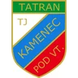

Posledný zápasStarší dorast U19
 Jacovce U19domáci
Jacovce U19domáciVýsledok 0:6
 OTJ Horné Obdokovcehostia
OTJ Horné ObdokovcehostiaPrehrapolčas 0:2
Návrh webu · nie je to oficiálna stránka klubu
IV. liga U19, 4. miesto zo 16
Posledný zápasStarší dorast U19
Jacovce U19domáciVýsledok 0:6
OTJ Horné ObdokovcehostiaPrehrapolčas 0:2
11–0–4výhry, remízy a prehry vo všetkých súťažiach, skóre 51:33
IV. liga U19
| # | Tím | Z | V | R | P | Skóre | B |
|---|---|---|---|---|---|---|---|
| 1 | 15 | 14 | 1 | 0 | 135:3 | 43 | |
| 2 | TJ Družstevník Nedožery-Brezany | 15 | 12 | 0 | 3 | 81:31 | 36 |
| 3 | 15 | 11 | 1 | 3 | 44:30 | 34 | |
| 4 | 15 | 11 | 0 | 4 | 51:33 | 33 | |
| 5 | 14 | 8 | 2 | 4 | 51:43 | 26 | |
| 6 | 15 | 8 | 1 | 6 | 35:29 | 25 | |
| 7 | 15 | 8 | 1 | 6 | 35:33 | 25 | |
| 8 | 15 | 8 | 1 | 6 | 27:27 | 25 | |
| 9 | 15 | 6 | 2 | 7 | 32:41 | 20 | |
| 10 | MFK Baník Handlová | 14 | 6 | 0 | 8 | 31:51 | 18 |
| 11 | 15 | 5 | 1 | 9 | 26:54 | 16 | |
| 12 |  TJ Tatran Kamenec pod Vtáčnikom | 15 | 4 | 2 | 9 | 23:28 | 14 |
| 13 | 15 | 3 | 3 | 9 | 32:51 | 12 | |
| 14 | 15 | 4 | 0 | 11 | 28:56 | 12 | |
| 15 | 15 | 2 | 1 | 12 | 24:74 | 7 | |
| 16 | TJ-ŠK Radošina | 15 | 1 | 0 | 14 | 12:83 | 3 |
Hráči, ktorí v kalendárnom roku 2026 nastúpili alebo boli v nominácii na zápas (podľa Sportnetu). Pri mládeži uvádzame len mená.